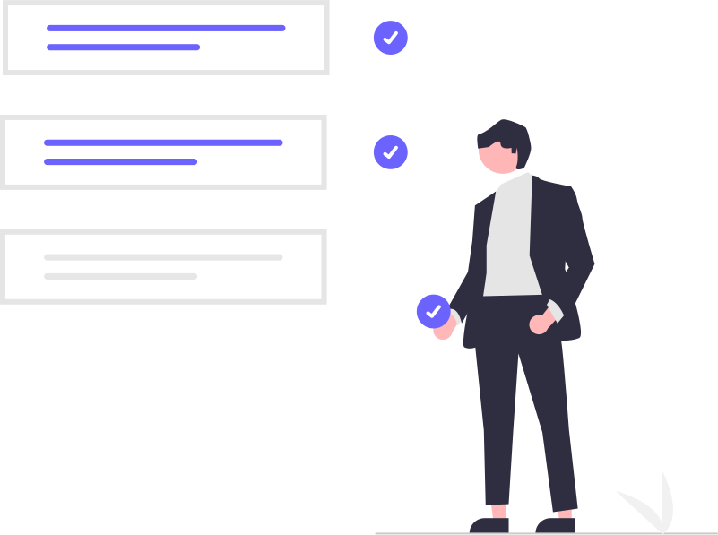

¿A QUÉ NOS ENFOCAMOS?

1 El OBJETIVO PRINCIPAL es
Porporcionar soluciones de software sustentados en tecnología nueva y funcional, en cada una de áreas demandantes del mercado, buscando permanentemente la distinción y satisfacción del cliente, así como la calidad del servicio.
2 AXOCODE procura
Desarrollar nuevas tecnologías sin afectar la integridad del usuario, ni de la empresa como principal gestor de ideas, busca seguir sus principios, valores y políticas, para que de esta forma, exista un sana relación empresa-cliente.
3 AXOCODE aspira
Ser el líder der mercado, así como una empresa reconocida por la calidad de sus servicios y productos.
4 AXOCODE se enfoca en
Generar mayores utilidades para obtener un bienestar común y una mayor rentabilidad sustentable en el mercado.